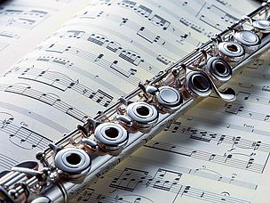

My Interests
One of my favorite things to do is play the piano and flute. I have been playing the piano for 5 years and flute for 4 years and really enjoy it.I have been playing the flute for 4 years now and is even in the school band.I find music is a really good way for me to relieve my stress and relax a little.

Another thing that I really like to do is to read. My favorite genre is historical fiction. I like to read about how people lived in the 1900s. I also love to read fantasy books. Some of my favorite books are the Lunar Chronicles, Anne of Green Gables, and Little House on the Prairie.